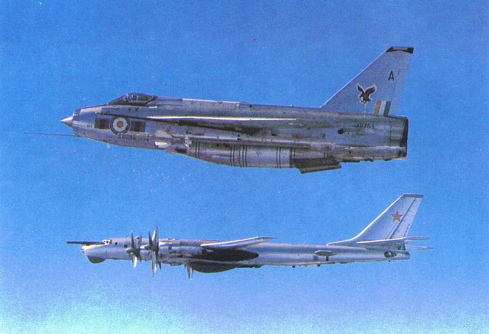
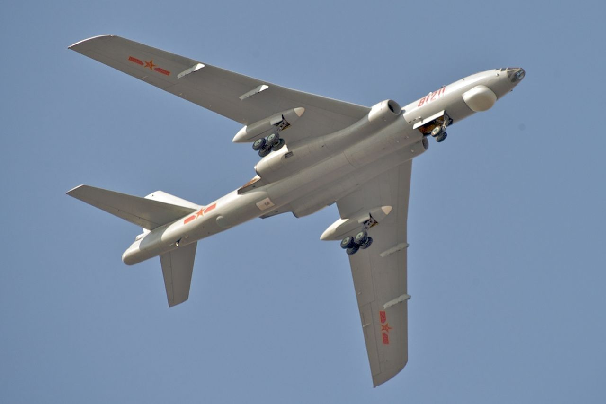
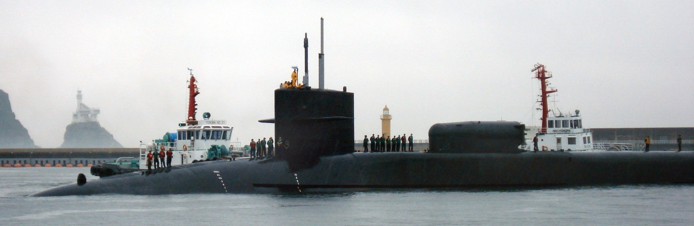
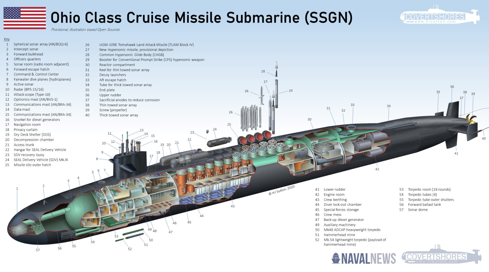
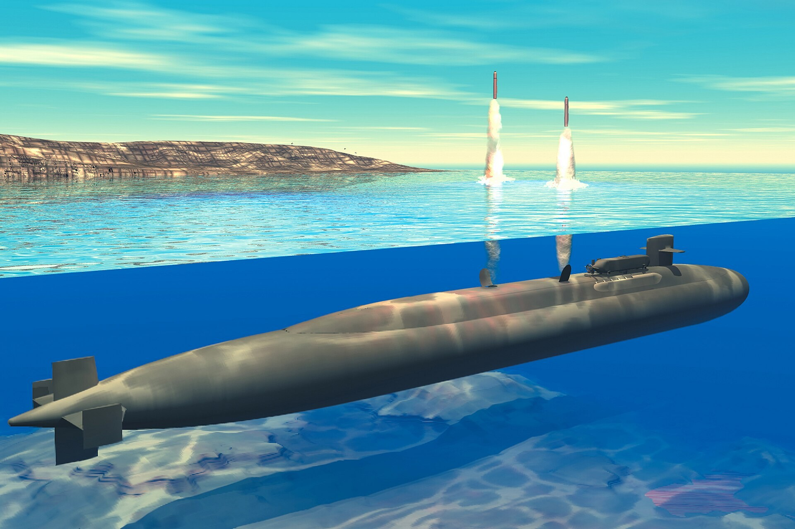
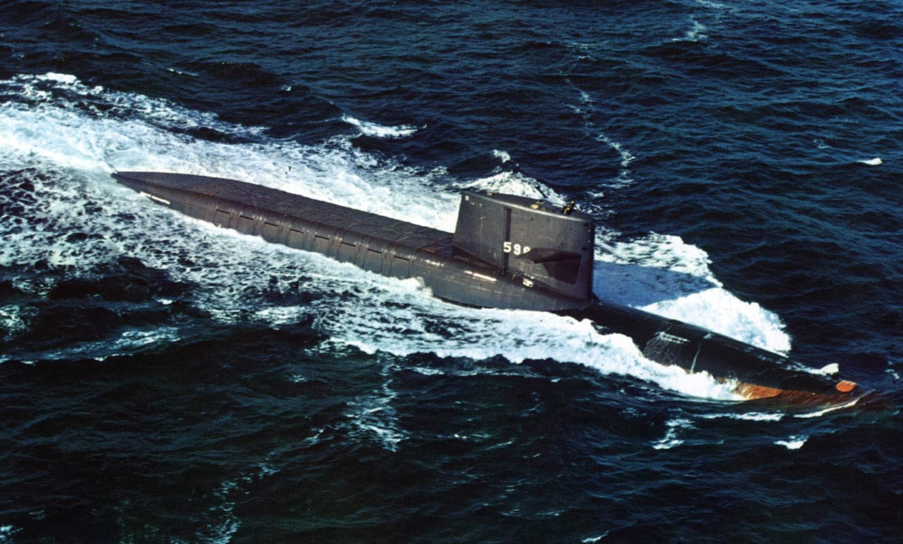
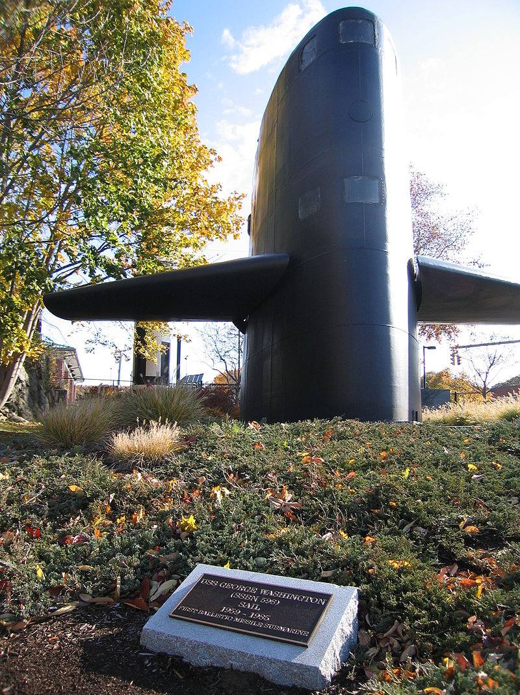
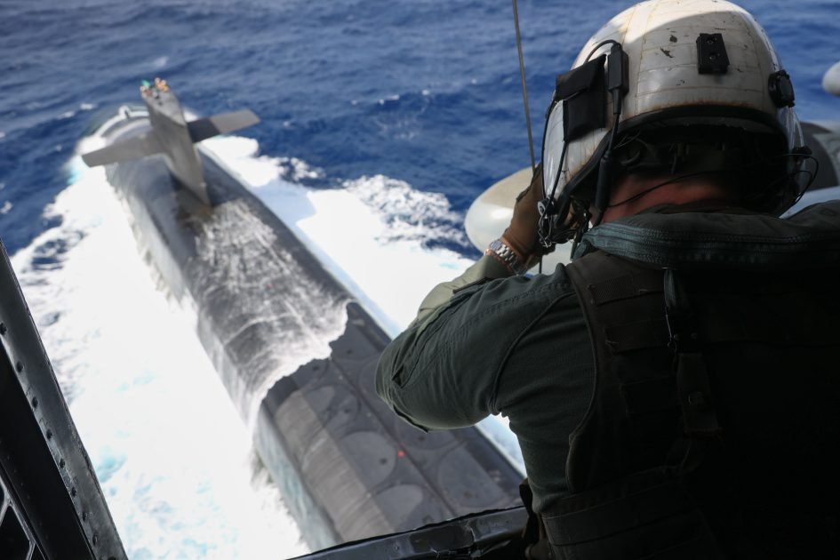
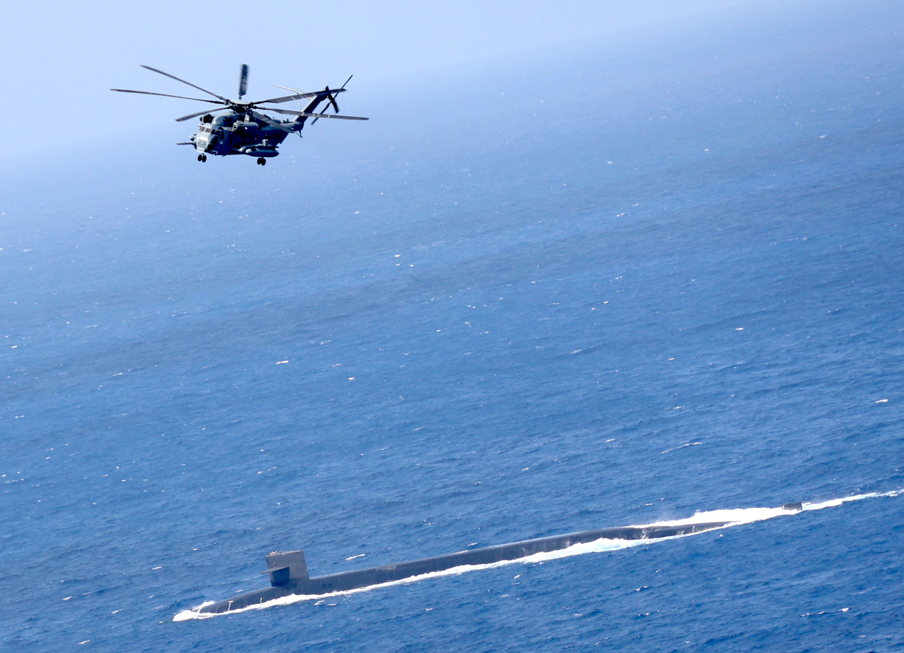

Showing the flag - 항모, 폭격기, 핵잠함
게시: 2023-06-22T06:30:17+09:00
<전쟁 억지력으로서의 핵잠함> 최근 부산항에 들어온 Ohio급 핵잠수함 USS Michigan(SSGN-727, 1민8천톤, 20노트)은 원래 부산에 자주 왔음 (2010, 2015, 2017). 특히 2010년에는 4월에 부산 입항한 이후 불과 2달만인 6월에 부산에 또 왔음. 이 떄는 특수한 상황이었는데, 당시 중국이 동중국 해에서 미사일 시험을 하면서 군사적 긴장이 높아졌기 때문. 미국은 중국에 대한 경고로 무력 시위를 하기로 했고, 그 수단으로 2010년 6월 28일, 3척의 Ohio급 핵잠수함을 중국 근처에서 일제히 부상시켜 중국에게 '우리가 지켜보고 있다'라는 메시지를 전달한 것. 이건 잠수함을 현시 효과 (showing the flag) 수단으로 사용한 매우 희귀한 사례. 원래 현시 효과가 좋은 것은 항공모함. 원래 항공모함은 크고 무력 투사 범위도 넓은데다 절대 홀로 다니지 않고 호위함들을 거느리고 다니기 때문에 더욱 효과가 좋음. 항모가 출동하는 것은 그만큼 돈이 많이 들어가는 셈이니 정말 진지한 메시지를 전달하는 셈. 이렇게 항공모함이 출동해도 실은 먼 바다 인근에만 머물기 때문에 항공모함이 출동했다는 사실은 (항모 동원해서 현시 효과를 노리는 나라는 사실상 미국 뿐이니) 미국방부가 CNN에 보도자료 주면서 알려야 함. 그러지 않으면 대부분의 나라들은 수평선 너머 수백 km 지점에 항모가 와있는지 없는지 알 방법이 없음.

(소련의 Tu-95 폭격기를 감시하는 영국 English Electric Lightning 전투기. 전투기가 폭격기보다 못 생기기는 쉽지 않은데 영국이 그걸 해냅니다!)
항모가 없거나 있어도 변변찮은 나라가 쓰는 현시 효과 수단은 장거리 폭격기. 폭격기도 크고 무력 투사 범위도 넓고 무엇보다 눈에 잘 띄기 때문. 더군다나 폭격기를 날려서 메시지 전달 대상인 나라의 방공식별구역에 들어가면 그 나라의 전투기가 자체 비용으로 날아와 견제를 하면서 영상도 찍어가기 때문에 그 나라의 언론 방송에 대문짝만하게 나옴. 그러니 현시 효과로서는 적국의 금전적인 스폰서까지 받는 셈이니 진짜 가성비 짱. 그러나 전세계에 장거리 폭격기 가진 나라들도 몇 안 되기 때문에 이건 러시아가 주로 쓰는 방법이고, 중국도 요즘 종종 사용. 다만 중국은 장거리 폭격기 전력이 좀 빈약하여 1950년대에 개발된 Tu-16를 라이센스 생산한 Xian H-6만 가지고 있기 때문에, 이런 것으로 힘자랑하는 것을 보면 좀 짠함.

(H-6 폭격기. 못 생겼음.)
그런데 은밀성이 핵심인 핵잠수함으로 현시 효과를 어떻게 노리지? 방법이 없음. 그래서 이 3척의 Ohio급 핵잠수함들, 그러니까 USS Michigan, USS Ohio, USS Florida는 모두 부상한 뒤 인근 동맹국 항구로 입항. 그래야 방송에 보도가 되니까. 미시건은 한국 부산항에, 오하이오는 필리핀 수빅만에, 플로리다는 인도양의 디에고 가르시아 섬에 들어갔음.

(2010년 6월 28일 부산항에 입항했던 USS Michigan. 입국 목적은 "중국이 볼 수 있도록 잘 찍어서 방송에 내보내주세요!") <근데 저거 전략 핵자산 맞아?> 일반적으로 핵잠함으로 현시 효과를 노리지는 않음. 은밀성이 핵심이라서 어디에 있는지 항상 쉬쉬해야 하는 핵잠함을 노출시키는 것은 바보짓이기 때문. 그런데 왜 미국은 위에 언급한 것처럼 1만8천톤짜리 오하이오급 핵잠함을 3척이나 동시에 노출시켰을까? 이번에 부산항에 들어온 Ohio급 핵잠수함 USS Michigan(SSGN-727)은 1980년 진수된 꽤 낡은 SSBN, 즉 전략 탄도탄 잠수함으로서, 미해군에서 역사상 가장 큰 잠수함인 Ohio-class의 2번함. 그런데 가만 보면 미시건은 SSBN이 아니라 순항미쓸 잠수함(SSGN)이라고 표시됨. 분명히 오하이오급 핵잠함들은 SSBN이었는데? 미시건은 국내 보도된 것처럼 '미국 전략자산'이라고 하기에는 좀 거시기하게도 (명확하게 밝히지는 않지만) 핵무장은 안 하는 모양. 이유는 미시건은 다른 3척의 오하이오급 자매함들과 함께 2007년 SSBN에서 SSGN으로 개조되었기 때문. 토마호크에도 핵탄두를 달 수는 있지만 느리고 격추되기 쉬운 순항 미쓸에 핵탄두를 달지는 않는 것이 요즘 상식. 원래 오하이오급 SSBN들은 총 18척으로서, 이들이 전체 미국 핵전력의 50%를 담당. 그런데 쏘련이 망하면서 냉전이 끝나고 핵군축이 시작되자 오하이오급 SSBN 18척이 다 있을 필요가 없어짐. 그래서 가장 낡은 순서대로 4척을 퇴역시키려 했는데, 당시 벌어지던 저(?)강도 분쟁에 커다란 잠수함이 순항미쓸로 화력 지원해주면 좋겠다는 아이디어에 따라 커다란 핵다탄두 탄도탄인 Trident 20발 대신 작고 순한(?) 순항 미쓸 토마호크 154발을 탑재한 SSGN으로 개조됨.

그러니까 2010년 6월에 중국에 경고를 주겠다면서 일제히 부상했던 USS Michigan, USS Ohio, USS Florida는 모두 핵탄도탄을 탑재한 SSBN이 아니라, 순한 맛의 토마호크 순항미쓸을 탑재한 SSGN에 불과했던 것. SSBN은 진짜 숨겨야 하는 물건이므로 현시 효과를 노린답시고 그런 식으로 노출시키지는 않는 모양. 그렇다고 저런 SSGN이 무쓸모인 것은 아님. 원래 크루즈 미쓸은 본질적으로 자폭 드론이니 미해군이 잠수 드론 항모를 가진 셈. 2017년 트황상이 시리아 공군 기지를 공격했을 때 동원한 것이 2척의 알레이버크급 구축함인 USS Porter와 USS Ross였는데, 이 두 척에서 총 59발의 토마호크를 발사. 각각의 구축함에는 총 90개의 수직발사관이 있지만 절반 이상의 발사관에는 대공 미쓸을 가지고 있었을 테니 이들은 가진 토마호크 중 대부분을 쏟아 부은 것. 그런데 오하이오급 SSGN 1척마다 1천 파운드짜리 탄두를 가진 토마호크가 154발씩 있으니 1천 파운드짜리 폭탄 4발을 탑재한 전폭기 38대를 한꺼번에 출격시키는 것과 동일한 효과를 낼 수 있음. 더군다나 전폭기를 호위할 전투기도 필요없고 항모를 보호할 구축함도 필요없음. 애초에 탑건2에서 매버릭이 활약할 이유가 없었음. 정말 가성비 짱인 항모라고 할 수 있음.

단, 언제나 문제가 되는 것은 실시간 감시 및 표적획득. 그건 잠수함에서는 진짜 답이 없음. 이동 목표물은 절대 때릴 수 없고, 공군기지 같은 고정 목표물만 타격 가능. <미친 가동률의 비밀> 위에서 언급했듯이 전략 탄도미쓸 잠수함 SSBN은 ICBM, 핵폭격기와 함께 미국 핵억지력의 3축 중 하나로서, 저 14척의 SSBN들이 전체 미국 전체의 전략 핵탄두의 절반을 담당. 그러니까 저 14척 중 1척에 뭔가 사고가 생기면 미국 전체의 핵전력 3.57%가 날아가는 거임. 하지만 사고가 생기지 않더라도 군함이라는 것은 항상 바다에 떠있을 수가 없는 존재. 미해군이 보유한 각종 수상함 중 바다에 나가 임무를 수행 중인 숫자, 즉 가동률은 20%에 불과. 그러니까 80%의 수상함들은 임무 수행 이후 귀항 중이거나 쉬면서 정비 중이거나 뭐 그러함. 그러니까 그런 평균 가동률이 핵탄두로 무장한 SSBN에도 적용된다면 14척 중 가용한 것은 3척이 채 안 됨. 이는 미국의 핵억지력 40% 정도가 당장은 임무 수행 불가능이라는 뜻. 이 문제는 1959년 미해군 최초의 SSBN인 USS George Washington (SSBN-598, 6700톤, 25노트)이 진수될 때부터 미해군이 고민한 사항.

이에 대한 해법은? 미해군 잠수함의 Blue/Gold Crewing System. 오하이오급 SSBN에는 155명이 승조원이 탑승하는데, 아예 잠수함 1척당 Blue조와 Gold조의 2개조 155 x 2명을 할당하는 것. 한 조가 잠수함에서 2~3달 동안 Hell을 빠는 동안, 다른 한 조는 모항에서 훈련 등의 명목으로 꿀을 빠는 시스템. 이를 통해 미해군의 SSBN은 바다에 나가 임무를 수행하는 가동률이 50%가 넘는다고.

(최초의 SSBN인 USS George Washington의 sail 부분. 1985년 퇴역한 이후 1998년 해체되기 전에 저 sail 부분을 떼어내어 코네티컷 주 Groton에 있는 Submarine Force Library and Museum에 전시됨. 미국 애들 취향이 좀 기괴함.)
나폴레옹의 프랑스군 5만이 2분에 4발의 머스켓 사격이 가능한 것에 비해, 웰링턴의 영국군 4만이 2분에 6발 사격이 가능하다면, 웰링턴의 실제 화력은 나폴레옹보다 더 높다고 할 수 있음. 그와 마찬가지로 핵잠수함이 항구에서 머물러 재보급을 받는 시간 등을 줄일 수록 더 많은 핵잠수함을 가진 것과 동일한 효과를 낼 수 있음. 이를 위해 오하이오급 핵잠수함에는 3개의 커다란 화물용 햇치가 설치되어 있고 이를 통해 더 재빨리 보급물자나 교체 부품 등을 실을 수 있다고. 19세기 말 20세기 초에 세계 열강 사이에 거함거포 건함 경쟁이 한창일 때, 겉으로는 드러나지 않지만 영국 해군이 조용히 중시했던 부분이 바로 전함에 석탄을 싣는 속도. 항구에서 석탄을 싣는 속도가 빠를 수록 바다에서의 작전 가용 시간이 길어지니까. 1899년에 St John Daily Sun이라는 매체에 실린 '전함의 석탄 적재 : 영국 해군이 전세계를 주도하는 분야' (Coaling Battleships; A Matter in Which the British Navy Leads the Whole World)라는 기사 내용. "전함에 석탄을 채우는 속도는 시간당 100톤을 약간 상회하는 정도가 평균이라고 믿는다. 이에 관하여, 최근 있었던 크레테 섬 분쟁 동안에 이 섬에 정박했던 여러 국가 소속 함선들의 석탄을 채우는 속도를 제시하는 것이 좋을 것이다. 프랑스 해군은 시간당 30~40톤, 이탈리아는 20톤, 독일, 오스트리아, 러시아는 평균 10톤 정도였다. 우리의 외국 친구들에게는 놀랍게도, 영국 해군은 시간당 100톤을 조금 넘는 속도로 채웠다. 우리 영국 해군이 다른 나라 해군에 비해 가지는 우월함이 여기서 한번 더 드러난 것이다."
그래서인 아무리 구글링을 해봐도, 핵잠수함이 미사일을 쏘는 사진이나 그림 등은 쉽게 찾을 수 있지만, 핵잠수함에 실제로 어떻게 보급품이 적재되는지는 자료를 찾기가 어려움. 아마 보안 자료인 모양.
 
(열심히 구글링한 결과 찾은 자료가 이것 뿐. 2023년 5월 9일, 필리핀 해에서 Ohio-class 핵잠함인 USS Maine (SSBN-741)에게 공중 보급품 전달 (vertical replenishment, VERTREP)을 수행 중인 미해병대 소속 CH-53E 헬리콥터.)